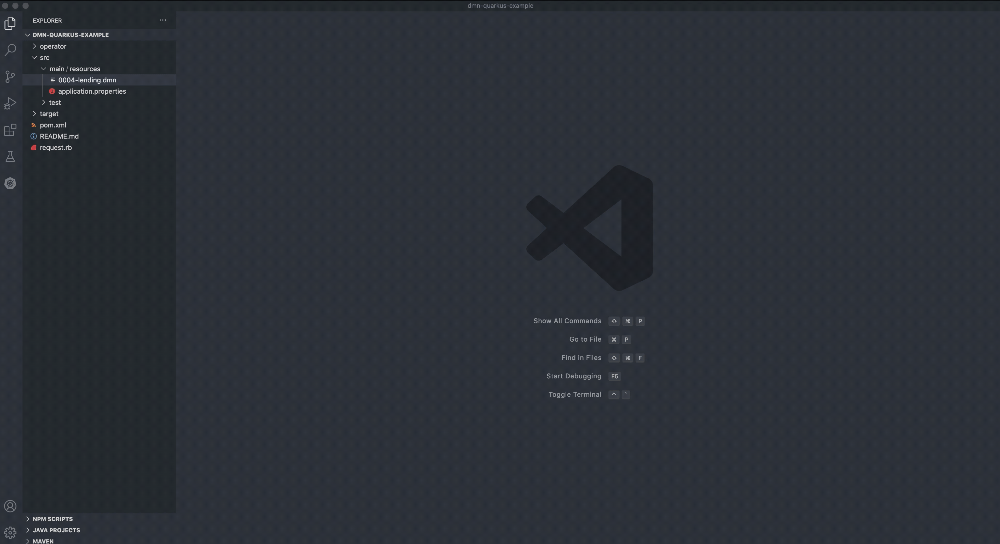

Kogito Tooling 0.8.3 Released!
We have just launched a fresh new Kogito Tooling release! 🎉
On the 0.8.3 release, we made a lot of improvements and bug fixes. This post will give a quick overview of this release, and also add some highlights of our 0.8.2 and 0.8.1 releases. I hope you enjoy it!
BPMN and DMN Standalone Editors
Since 0.7.2.alpha3 we started shipping a new component of the KIE tooling, our standalone BPMN and DMN Editors. On the 0.8.1 release, we delivered the first official version of this cool library. 🎉
These Standalone Editors provide a straightforward way to use our tried-and-true DMN and BPMN Editors embedded in your web applications.
The editors are now distributed in a self-contained library that provides an all-in-one JavaScript file for each of them that can be interacted with using a comprehensive API for setup and control it.
Now it’s super easy to embed our editors in your applications, see this gist example:
const editor = DmnEditor.open({
container: document.getElementById("dmn-editor-container"),
initialContent: Promise.resolve(""),
readOnly: false,
origin: "",
resources: new Map([
[
"MyIncludedModel.dmn",
{
contentType: "text",
content: Promise.resolve("")
}
]
])
});That will render:

Embed your BPMN and DMN models
In the 0.8.2 release, we have introduced a new feature that will enable you easily embed your BPMN and DMN models on any web application with an iframe. We have updated our toolbar on the Business Modeler Preview, and now under the “Share” menu, there is an “Embed” option.

See the full blog post for an in-depth look into this feature.
DMN editor now opens 1.1 and 1.3 assets
The DMN editor continues evolving towards making users’ lives as simple as possible. On Kogito 0.8.1, we introduce a new mechanism to open DMN 1.1 and 1.3 assets.

New Features, fixed issues, and improvements
We also made some new features, a lot of refactorings and improvements, with highlights to:
Infrastructure
- [KOGITO-3718] – Importing DMN as Included Model in VS Code on Windows
- [KOGITO-4219] – [Chrome Extension] “Copy link to Online editor” button doesn’t work on private repositories
- [KOGITO-4220] – [Chrome Extension] The “Go to Home page” link doesn’t work
- [KOGITO-2693] – Standalone editors (Milestone 1)
- [KOGITO-3450] – Export the Online Editor content using the Standalone Editor
- [KOGITO-3455] – Discuss and plan productization embedded DMN and BPMN editors
- [KOGITO-2629] – [VSCode] Undo/redo command don’t fire for webviews if used from command palette
- [KOGITO-2697] – Recent saved file is not being show in Recents list
- [KOGITO-3808] – Fix Keyboard Shortcuts modal title on VS Code dark theme
- [KOGITO-3884] – Save SVG file using the kieserver naming convention
- [KOGITO-3348] – Fix Open SVG popup to not open SVG when clicking the X button
Editors
- [KOGITO-4122] – [Test Scenario Editor] Improve Test Scenario creation UX
- [KOGITO-3302] – Allow to select any DMN asset in Wizard
- [KOGITO-4049] – Cannot open Violation Scenarios.scesim in VScode
- [KOGITO-4197] – [DMN Designer] DMN 1.1 model can not be fixed to proper DMN 1.2
- [KOGITO-4315] – Stunner – Cannot undo/redo more than once
- [KOGITO-3853] – [DMN Designer] Move the “structure” option to top of the Data Type drop-down
- [KOGITO-4104] – [DMN Designer] Rename “Dismiss” to “Skip tour”
- [KOGITO-1429] – DefaultXmlFormatter: Should return plain text if formatting fails
- [KOGITO-1677] – [DMN editor] User cannot open DMN editor if it was previously saved in workspace
- [KOGITO-2187] – DMN editor when moving DS output decision becomes encapsulated
- [KOGITO-2515] – DMN Editor decision service wrong layout
- [KOGITO-2712]] – [DMN Designer] VS Code Included models self reference
- [KOGITO-3151] – [DMN Designer] Copied value is pasted twice
- [KOGITO-3476] – DMN decision table “Unable to resolve type reference ‘UNDEFINED’” in simple data types
- [KOGITO-4124] – Error when adding constraints to a data type
- [KOGITO-4165] – [DMN Designer] ‘continue’ vs ‘Continue’
- [KOGITO-3885] – [DMN Designer] Show parameters list for Decision Services
- [KOGITO-3805] – [DMN Designer] Convert DMN 1.1/1.3 models to version 1.2
- [KOGITO-2770] – [Test Scenario Editor] Changes on Setting Docks must activate isDirty status
- [KOGITO-3696] – DMN Editor regression failing display edge when xml missing DMNDI
Further Reading/Watching
We had recently some cool talks at KIE youtube channel:
- KieLive#24 DMN: squeeze the most out of these features, by Matteo;
- KieLive#23 Kogito + Quarkus: the Marriage Made on a Cloud, by Edoardo;
- KieLive#22 OptaPlanner Shadow Variables for the Vehicle Routing Problem and Task Assignment, by Geoffrey;
I would like to also recommend the recent article from Yeser, where he provides a complete step-by-step tutorial to import and process a PMML model inside the DMN Editor in VSCode.
Thank you to everyone involved!
I would like to thank everyone involved with this release, from the excellent KIE Tooling Engineers to the lifesavers QEs and the UX people that help us look awesome!